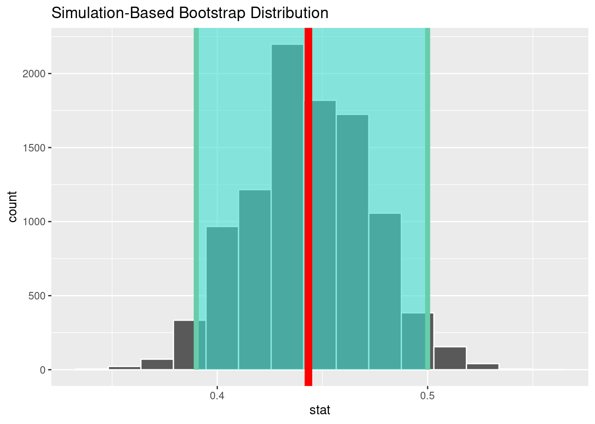

set.seed(123)
pop_size <- 12000
student_id <- 1:pop_size
anreise <- c(runif(n = pop_size * 0.8, min = 5, max = 40),
runif(n = pop_size * 0.2, min = 60, max = 120))
geschlecht <- sample(c('m', 'w'), size = pop_size, replace = TRUE)
studienordnung <- sample(c('alt', 'neu'), size = pop_size, replace = TRUE)
wohnort <- sapply(anreise, function(x) {
if(x < 30) 'stadt'
else 'land'
})
studiendauer <- rnorm(n = pop_size, mean = 3.5, sd = 0.6)9 Konfidenzintervalle mit Bootstrap
- Idee hinter Bootstrapping erklären.
- Konfidenzintervalle mit dem Paket
inferberechnen. - Konfidenzintervalle interpretieren.
9.1 Variabilität von Schätzungen
In der Vorlesung und im Kapitel 8 haben Sie erfahren, dass Statistiken aus zufällig gezogenen Stichproben dem Zufall unterliegen. Sie sind Zufallsvariablen. Wenn wir Parameter der Grundgesamtheit schätzen (z. B. Mittelwert oder Anteil) oder in Experimenten die Effektstärke bestimmen möchten, dann ist es eher unwahrscheinlich, dass wir den wahren Parameter ganz genau treffen. Daher ist es sinnvoll, bei einer Schätzung einen Bereich von plausiblen Werten, das sogenannte Konfidenzintervall anzugeben.
9.2 Studiendauer in Werdeschlau
Wir beschäftigen uns erneut mit unserem fiktiven Beispiel der Studierenden an der Universität Werdeschlau. Diesmal interessieren wir uns dafür für den Anteil der Studierenden, die auf dem Land wohnen.
9.2.1 Simulation der Grundgesamtheit und einer Befragung
Wir simulieren erneut unsere Grundgesamtheit.
Wir setzen geschlecht, wohnort, studiendauer, studienordnung und anreise zu einer Datenmatrix (tibble) zusammen und nennen das Objekt grundgesamtheit.
grundgesamtheit <- tibble(student_id, geschlecht, wohnort, studiendauer, studienordnung, anreise)Wie im Kapitel 8, simulieren wir eine Befragung von 300 Studierenden, indem wir eine zufällige Stichprobe (ohne Zurücklegen) aus den 1200 Studierenden (Grundgesamtheit) auswählen.
set.seed(345)
befragung_size <- 300
befragung <- rep_sample_n(grundgesamtheit, size = befragung_size, replace = FALSE, reps = 1)Unsere Forschungsfrage lautet: Wie groß ist der Anteil der Studierenden, die auf dem Land wohnen. Wir möchten aus der eben gewonnenen Stichprobe, den wahren Parameter (Anteil der Studierenden, die auf dem Land wohnen, in der Grundgesamtheit), den wir mit \(p\) bezeichnen schätzen.
Die beste Schätzung für \(p\) ist der Anteil der Studierenden, die auf dem Land wohnen, den wir in der Befragung, d. h. unsere zufällige Stichprobe beobachten. Diesen Anteil nennen wir \(\hat{p}\) und die Variable p_hat.
Zunächst zählen wir einfach die Studierenden der verschiedenen Wohnorte.
befragung %>%
count(wohnort)Wie verändern sich diese Zahlen, wenn wir zufälligerweise andere Studierende befragt hätten? Wir wählen neue Studierende aus und wiederholen die Berechnung des Mittelwerts der Studiendauer, ähnlich wie in Kapitel 8.
set.seed(987)
befragung <- rep_sample_n(grundgesamtheit, size = befragung_size, replace = FALSE, reps = 1)
befragung %>%
count(wohnort)Der Anteil der Studierenden auf dem Land lässt sich wie folgt berechnen:
p_hat <- befragung %>%
group_by(wohnort) %>%
summarise(prop = n()/befragung_size)
p_hatEs wohnen also 44.3% auf dem Land und entsprechend 55.7% in der Stadt. Dass beide Anteile berechnet werden, soll uns hier nicht stören. Natürlich sind die beiden Anteile zusammengerechnet immer gleich 1.
Erwartungsgemäß bringt jede Wiederholung der Befragung etwas andere Ergebnisse.
9.3 Workflow in infer
Das Paket infer bietet ein einheitliches Framework sowohl für Hypothesentests als auch für die Berechnung von Konfidenzintervallen (Abbildung 8.1). Es hat 4 Verben, die den oben beschriebenen Prozess der Hypothesentests vereinheitlichen, und ein Verb für die Visualisierung der Ergebnisse:
specify()Variablen festlegenhypothesize()Nullhypothese definierengenerate()Daten unter der Nullhypothese generierencalculate()Stichprobenverteilung (d.h. Verteilung der Teststatistik) berechnenvisualize()Stichprobenverteilung darstellen
Für die Berechnung der Konfidenzintervalle benötigen wir keine Hypothese (also kein hypothesize()) und keine \(p\)-Werte. Alle anderen Funktionen sind nach wie vor notwendig. Das Berechnen des Konfidenzintervalls übernimmt die Funktion get_confidence_interval().
9.4 Konfidenzintervalle berechnen mit infer
9.4.1 Schritt 1: Berechnen der Statistik
Unsere Forschungsfrage lautet: Wie groß ist der Anteil der Studierenden, die auf dem Land wohnen. Wir möchten diesen Anteil durch unsere Befragung schätzen und ein Konfidenzintervall für die Schätzung angeben.
Die Schätzung haben wir bereits:
p_hat9.4.2 Schritt 2: Bootstrappen
Im nächsten Schritt ziehen wir aus unserer Stichprobe befragung mit Zurücklegen Bootstrap-Stichproben und berechnen für diese die Anteile der Wohnorte. Das sind unsere Bootstrap-Stichproben und die entsprechenden Statistiken. Wir können infer mitteilen, dass wir nur den Anteil der Landbewohner benötigen.
set.seed(345)
bootstrap_distribution <- befragung %>%
specify(response = wohnort, success = 'land') %>%
generate(reps = 10000, type = 'bootstrap') %>%
calculate(stat = 'prop')9.4.3 Schritt 3: Ergebnisse darstellen
Nun können wir auch das Konfidenzintervall für unsere Schätzung \(\hat{p}\) berechnen:
percentile_ci <- bootstrap_distribution %>%
get_confidence_interval(point_estimate = p_hat$prop[1],
level = 0.95, type = "percentile")
percentile_ciDie Verteilung der Anteile der Studierenden, die auf dem Land wohnen, in den Bootstrap-Stichproben stellen wir als Histogramm dar und markieren gleich das Konfidenzintervall.
visualize(bootstrap_distribution) +
shade_confidence_interval(percentile_ci) +
geom_vline(xintercept = p_hat$prop[1], size = 3, col = 'red')Warning: Using `size` aesthetic for lines was deprecated in ggplot2 3.4.0.
ℹ Please use `linewidth` instead.
9.4.4 Schritt 4: Schlussfolgerungen ziehen
Wir können nun unsere Forschungsfrage beantworten:
Wir schätzen den Anteil der Studierenden, die auf dem Land wohnen, auf 0.44, mit dem Konfidenzintervall von 0.39, 0.5.
9.5 Kleine Zusammenfassung
- Grundgesamtheit: alle Studierenden der Universität Werdeschlau
- zufällige Stichprobe: eine zufällig ausgesuchte Gruppe von Studierenden
- Parameter der Grundgesamtheit: z. B. der wahre Anteil von Studierenden, die in der Stadt oder auf dem Land leben
- Schätzer für diesen Parameter der Grundgesamtheit: Anteil der Studierenden, die in der Stadt oder auf dem Land leben, berechnet aus der zufälligen Stichprobe. Da die Stichprobe zufällig ist, kann man davon ausgehen, dass sie repräsentativ für die Grundgesamtheit ist und der Schätzer unverzerrt (unbiased, d. h. ohne einen systematischen Fehler).
- Inferenz: schließen auf die Grundgesamtheit darf man, wenn die Stichprobe zufällig erhoben wurde und repräsentativ für die Fragestellung ist.
Die Begriffe Statistik, Schätzer, Schätzfunktion und Stichprobenfunktion werden als Synonyme verwendet. Die Statistik ist ja auch eine Funktion, da sie mit einer Formel eine Zahl aus Daten (Stichprobe) berechnet. Sie fasst die Stichprobe also zusammen.
9.6 Aufgaben
9.6.1 Vertiefung des Themas Parameterschätzung und Konfidenzintervalle
Arbeiten Sie das Tutorium Foundations of inference: 4 - Parameters and confidence intervals durch.